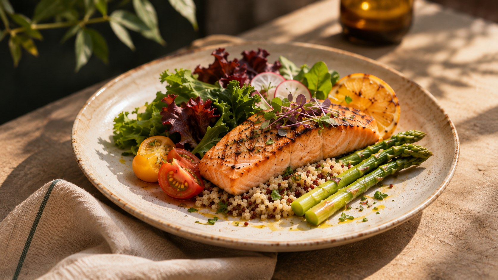
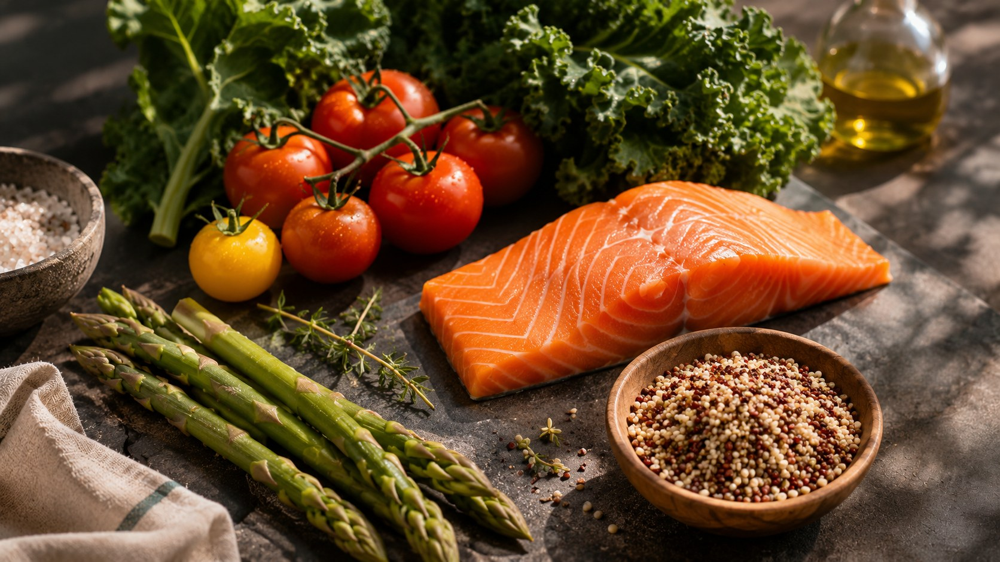

Tak yakin harus makan apa?
Memahami pilihan makanan saat memiliki GERD, gula darah tinggi, hipertensi, atau kolesterol tinggi tidak selalu mudah.
Memilih makanan yang sesuai kebutuhan kesehatan tak seharusnya membuat hari semakin rumit. Carelinary menghadirkan konsep katering nutrisi personal yang praktis, lezat, dan dirancang dengan penuh perhatian.

Di tengah pekerjaan, jadwal yang padat, dan kebutuhan kesehatan yang berubah, memilih makanan yang tepat bisa terasa melelahkan.
Memahami pilihan makanan saat memiliki GERD, gula darah tinggi, hipertensi, atau kolesterol tinggi tidak selalu mudah.
Rapat, perjalanan, dan lembur membuat merencanakan serta memasak menu setiap hari menjadi tantangan.
Makanan sehat yang monoton membuat rutinitas makan terarah lebih sulit dipertahankan.

Carelinary adalah konsep layanan katering nutrisi premium untuk orang-orang dengan kebutuhan diet terkait kondisi kesehatan tertentu.
Kami mengembangkan pengalaman makan yang memadukan perencanaan nutrisi personal, kualitas hidangan ala restoran, dan pilihan langganan yang praktis.
Program berikut adalah rancangan awal yang akan difinalisasi bersama tenaga gizi profesional.
Konsep menu yang mempertimbangkan pemicu makanan individual, porsi moderat, dan metode memasak rendah lemak.
Konsep menu bagi kebutuhan diet terkait diabetes, hipertensi, dan kolesterol tinggi dengan penyesuaian individual.
Catatan: Menu tidak menggantikan diagnosis, obat, atau perawatan medis. Kesesuaian diet memerlukan asesmen individual oleh tenaga kesehatan yang kompeten.
Kenali fokus kebutuhan nutrisi yang menjadi dasar pengembangan program Carelinary.
Menyesuaikan pemicu makanan, porsi, dan waktu makan sesuai respons individu.
Mempertimbangkan jumlah dan distribusi karbohidrat sesuai kebutuhan.
Memperhatikan natrium dan komposisi pola makan secara menyeluruh.
Mempertimbangkan jenis lemak, serat, dan keseimbangan menu.
Dirancang sebagai pengalaman yang mendukung rutinitas makan lebih terencana.
Rancangan menu sesuai kebutuhan dan preferensi setelah asesmen.
Rencana pendampingan ahli gizi untuk pengembangan dan evaluasi menu.
Komitmen pengembangan sumber bahan berkualitas dan lokal.
Rencana pengiriman pada hari kerja dengan pilihan lunch atau dinner.
Fasilitas pemeriksaan kesehatan masih dalam tahap perencanaan kemitraan.
Pengembangan alternatif kemasan dengan pengurangan penggunaan plastik.
Pilih rencana yang paling sesuai dengan jadwalmu. Simulasi berikut menggunakan harga Start from Rp80.000 per meal; harga final belum ditetapkan.
Informasi awal untuk mengenal Carelinary sebelum peluncuran.
Carelinary adalah konsep katering nutrisi premium yang berfokus pada kebutuhan diet terkait GERD dan kondisi kardiometabolik.
Website ini adalah demo pra-peluncuran. Kamu dapat mendaftar minat untuk memperoleh informasi ketika layanan siap.
Personalisasi adalah arah produk Carelinary. Kesesuaian menu harus ditentukan melalui asesmen individual dan pendampingan tenaga profesional yang kompeten.
Rencana paket tersedia untuk 5 atau 10 hari kerja, dengan pilihan lunch, dinner, atau keduanya. Mekanisme pemesanan final akan diumumkan saat peluncuran.
Pemeriksaan kesehatan dan body composition masih dalam tahap perencanaan. Jenis tes, mitra, biaya, dan persyaratan belum dikonfirmasi.
Konsep Carelinary menggabungkan fokus nutrisi berdasarkan kondisi, kualitas hidangan premium, dan fleksibilitas langganan. Keunggulan operasional akan diverifikasi saat layanan tersedia.
Dokumen konsep menargetkan harga Start from Rp80.000 per meal. Harga aktual bergantung pada menu, paket, dan biaya operasional final.
Daftarkan minatmu untuk mendapat kabar tentang peluncuran, program, dan informasi membership Carelinary.